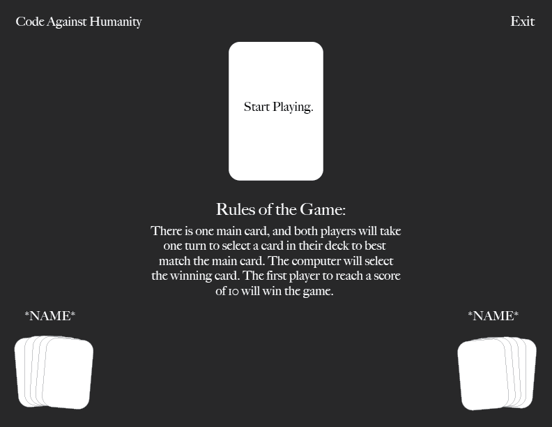

Project Type
Studio Project for DES 157
Role
Web Developer
Skills
Visual Design, Interaction Design, Coding, Game Design
Tools
Visual Studio Code, Adobe Illustrator, HTML, CSS, JavaScript
Timeline
Feb. 18 - Feb. 25, 2020
(1 week)
Studio Project for DES 157
Web Developer
Visual Design, Interaction Design, Coding, Game Design
Visual Studio Code, Adobe Illustrator, HTML, CSS, JavaScript
Feb. 18 - Feb. 25, 2020
(1 week)
This assignment was for my JavaScript course at UC Davis. The assignment was to practice the techniques and skills we learned in the class so far by using DOM manipulation, timers, and JavaScript objects. It was a way for us to use our imagination and creativity to build a desktop game. I wanted to do a game similar to Cards Against Humanity, but a coding version since it was an assignment for a coding class. It would require two players, and they would take turns selecting the best card. The computer would decide which card is the winner, and the player with the highest score at the end wins.
There is no online version of Cards Against Humanity.
Create a simple online game of Cards Against Humanity, but with a theme of technology and programming. Two players can play together without needing to buy the physical cards.
One of the options for this assignment was to take the game of Pig that we built with basic HTML, CSS, and JavaScript in class and add additional features and designs to it. The other option was to create a completely new game. I compiled a list of games I could make for this project:
I decided on Cards Against Humanity because I enjoy playing the game, but sometimes when I want to play it, I don't have anyone who plays it with me (sounds a little sad, I know!). I found there was no online version of the game online, except for this Cards Against Humanity Lab, but it was online a single-player research version.
Typeface: Helvetica Neue Bold
Logo:
Color scheme: Black and White
To recreate the game, I wanted a similar sense of humor that Cards Against Humanity has. I looked at a printable PDF of the game to get a sense of how their cards are written.
The initial design for the game was have a welcome screen for both players to put their name in. The next screen would display the rules of the game, so both players understood how it worked. The game screen would show the main card on top and the player's hand of cards on the bottom, and they would click on which card they wanted to play.

I used Visual Studio Code to build the site, and I used GitHub to host it. The coding took me about five days of coding to complete the game. I created the HTML first, CSS second, and JavaScript last.
The HTML for the game was pretty simple. It only required displaying the rules, scores, names, and images of the cards. I created 15 main cards and 35 player cards, so the computer can randomly select cards.
Similar to the HTML, the CSS was basic since the interface was very simple.
The JavaScript was the bulk of the entire game. It required hundreds of lines of code that took me days to write! I used JavaScript to add the player's names in the welcome screen, and it would be used throughout the game. I also added event listeners to see where the user clicked to switch out the card in their deck, and the computer would randomly generate a number between 0 and 1 which would "select" the winning card. The game would run for two rounds, and the winner would be chosen.
Building this game was difficult because I just learned some of these topics, and having to build hundreds of lines of code by myself was overwhelming. It did help me improve my JavaScript skills a lot because I forced myself to code and break down each functional part of the game. Even though it was challenging, finishing the game was extremely rewarding because I got positive feedback from my instructors and peers.
I was not able to remove all the bugs in the game, so I would fix the errors in the game to have it run smoothly. My idea was to create 5 rounds, and the player with the most points would win. However, I was unable to add more rounds, but it would make the game more fun.